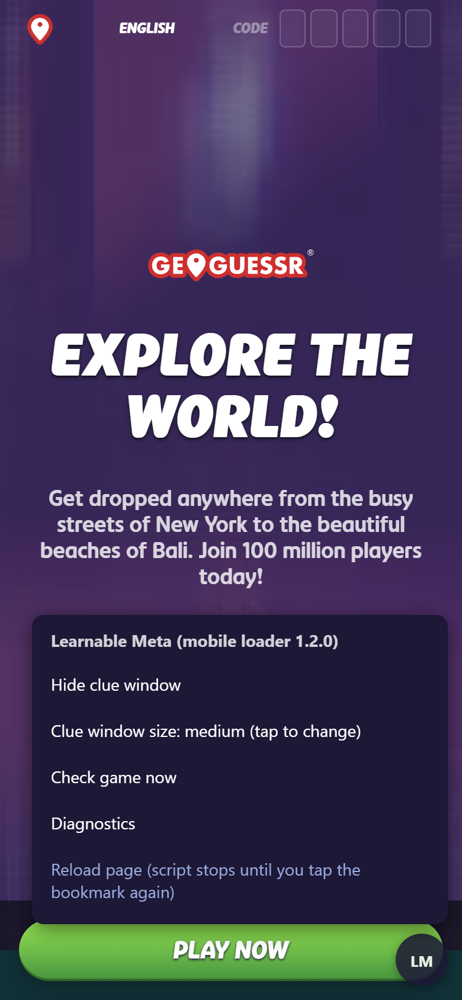
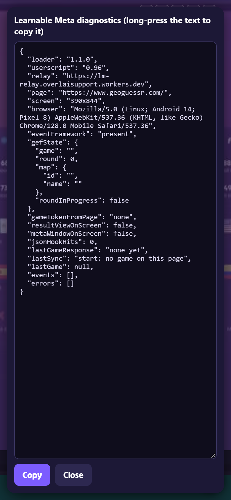

Help
Common problems
- It says "Open geoguessr.com first". You tapped the bookmark on another site. Open the game first.
- Tapping the bookmark does nothing. Start it from the address bar: type LM and tap the LM bookmark in the list. The Bookmarks page does not work for this.
- The bookmark opens a search or an empty page. The address was saved wrong. Redo step 4 on the Chrome, Brave or any Chromium browser page. The address must start with
javascript:. - It says "Learnable Meta failed to load". No internet, or the relay is down. Check the status on the home page and try again.
- It says loaded, but no clue after a guess. Tap the round LM button, then Check game now. Also make sure the map is a Learnable Meta map.
The LM button
The round LM button at the bottom right opens a small menu.


- Reset Meta Window Layout: puts the clue window back if you dragged it off screen.
- Check game now: looks at the current round again and shows the clue if a guess was just made.
- Diagnostics: technical details for whoever helps you. Tap Copy and send the text. It contains no passwords.
- Reload page: reloads GeoGuessr. Tap the bookmark again afterwards.
Other ways to get Learnable Meta on a phone
- Android: Firefox with the Tampermonkey add-on. See Learnable Meta's Android guide.
- iPhone and iPad: not supported here. Apple does not allow this method. See Learnable Meta's iOS guide for their Safari options.